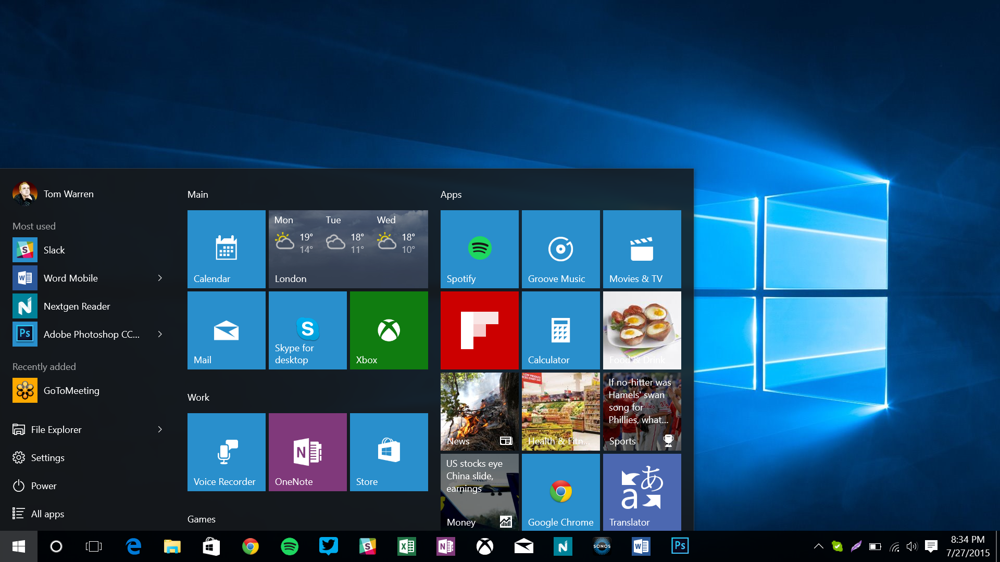
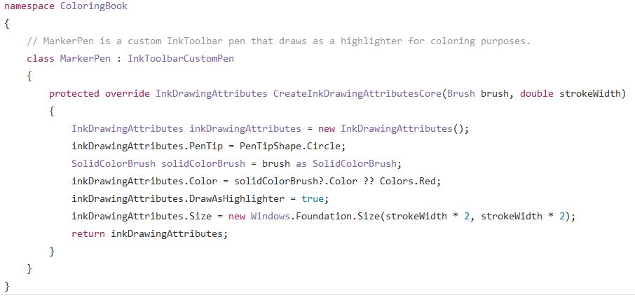

What is Desktop Development?
In this section I will talk about the the lives of those who develop desktop application. For the scope of this lesson we will focus on Windows desktop application development. Other operating systems such as Linux and Mac have different processes, so in order to be concise, we will discuss the processes involved for Windows operating systems only.
|  | The most recent release of Windows operating systems is Windows 10, which looks like the image to the left. Some of the Desktop Apps seen in this image can be seen in the menu as well as on the tool bar. Some examples of desktop applications are: Twitter, Slack, Microsoft Word, Spotify, and PhotoShop. Desktop apps can be thought of as apps that are downloaded onto your personal computer and do not need to be run in the browser. |
The Tools
So what do you need to get started developing applications for Windows 10 devices?
- Microsoft Visual Studio - an ide created by Microsoft that is used by millions of developers for many different tasks, including desktop application development.
- Windows 10 SDK (software development kit)
- Optional: Template applications and emulators
Microsoft Developers
The Microsoft Developers Center contains all the infromation necessary for a new (and experiened) developer to get started in the world of Windows Application development.
| Here is some sample code from the C# programming langauge that is typically used with Windows app development. C# is an extremely powerful high-level language created by Microsoft themselves, which makes it the go-to choice for all things windows related. |  |